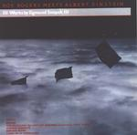

Home Artist links Label link

Sigmund Snopek - Roy Rogers Meets Albert Einstein
| Artist: | Sigmund Snopek |
| Title: | Roy Rogers Meets Albert Einstein |
| Label: | Musea DGBG 4410 |
| Length(s): | 49 minutes |
| Year(s) of release: | 1980/2001 |
| Month of review: | [05/2002] |
Line up
Sigmund Snopek III - piano, synths, flute, tape effects, vocals
Byron Wiemann III - electric guitars, acoustic guitars, percussion, vocals, lyrics
Mike Lucas - drums, percussion, tape effects, temple blocks, flexitone
Keith deBolt - bass, lead vocals on 13
Bret Tuveson - bass, bass pedals on ride in the dark
James Gorton - vocals on ride in the dark
Jeffrey Tappendorf - vocoder, harmonica, whistling, electronic bird, vocals
Edward Mumm - violin
Bonnie Weber Modell - violin
Warren Wiegratz - tenor and soprano saxophone on 13
Manuel Garcia - percussioon on 13
Marty Shadd - percussion on 13
Scott Menzel - percussion on 13
Cynthia Dahike - lyrics on 13
Llena de la Madrugada - flute on 14
Tracks
Ride In The Dark
| 1) | Zully's Truck | 2.39
|
| 2) | Dimension Snatch | 0.23
|
| 3) | Transformatia | 2.51
|
| 4) | Backpocket Refuge | 8.08
|
| 5) | Song And Worm Dream | 2.05
|
| 6) | Robotiko | 3.08
|
| 7) | OneBeamToColorsEndless | 0.35
|
| 8) | Meanwhile In LA | 2.29
|
| 9) | The Mountains | 1.14
|
| 10) | Death Valley Vortex | 2.13
|
| 11) | Wordless | 2.45
|
| 12) | Beam Bang | 0.32
|
| 13) | Roy Rogers Meets Albert Einstein | 12.50
|
| 14) | Song Sing To The Doldrum King | 6.50
|
Summary
Sigmund Snopek is a mystery to most. Every once in a while an album of his
surfaces with one labvel or another. Two of them did so with the now
defunct Music Is Intelligence label, another one originally from 1980
is now released on Musea.
The music
About three fifths of the album is taken up by the fourteen parts of
Ride In The Dark. The first part is Zully's Truck, which opens with
sounds of a track and continues in a rather swinging fashion with mainly
keyboards. There is something of Camel in there, but the keyboards are
way freakier. The transition to Dimension Snatch quickly followed
by Transformatia, which are more percussive and avant-garde is an abrupt one.
The guitar is a fiddly one and might remind some of Frank Zappa. The band's
approach is similar to that of Dave Kerman and his 5UU's. It surely cannot
be heard that the music on this album is from 1980. It all sounds fresh
and has no air of datedness whatsoever. Backpocket Refuge is one o fhte
larger parts in which variation is again strong. Some of the parts again
remind me a bit of older Camel, but maybe more the more adventurous
other members of the Canterbury scene. However, the music does not have the
typically British feel and to be honest, I like it a bit more than say
National Health, who for my tastes fiddled around a bit too much.
The guitar solo and keyboard accompaniment might have been taken from an
older Camel record, the sound of the band also reminds of an album
such as Moonmadness. A hint of jazzrock is hence present, but in fact the
band abounds in including diverse influences: percussive piano,
baroque themes (on harpsichord), but usually there is a nice melody in sight
as well. Past halfway the music falls away for a moment, after which the music
becomes eerie and spooky. Then the pace sets in again with again a strong
nod to Camel, but more active. The final part has quite a bit of bombast
with some sweeping gestures as well as some more oddball interludes.
Very good. Song And Worm Dream is a vocal track in which the Gentle Giant
vocal harmonies are very apparent. The vocal parts are quite varied with
strange lyrics and weird effects. A good vocal melody as well.
Robotiko has synths and piano and harbours a strong build-up until it
finally runs away. I was thinking of Neu! and Kraftwerk here this time.
Again, excellent with a strong drive and sense of urgency. This compzact
piece ends with flute moving right into the Tull inspired
OneBeamToColorsEndless (with flute having the lead). Meanwhile in LA
is something else again: a laid back piece with jazzy overtones and
a good melody played on the flute. Dreamy, but no filler as often occurs
with tracks as these. It ends with Jarrett-like piano, fast and playful.
On The Mountains, we get a variation on the American anthem. The music
is military sounding here with some dissonance involved.
On Death Valley Vortex, the synths reverberate, until we come to a more
atmospheric part with violin and wailings in the back. Very subtle.
With Wordless we return one of the earlier themes with a rowdy and catchy
guitar. The drummer is also very active here. Something of early Queen
in here. Beam Bang is the short closer to the epic.
Roy Rogers Meets Albert Einstein is a more RIO inspired piece with plenty
of percussionist joining in. In the first part we hear the marimba of
Zappa a lot. In addition, the strings give the music a somewhat old feel.
The music is somewhat more playful and less melodic here. In addition
to the strong Zappa presence, there was also rather a lot of piano playing
and some really repetitive parts where the Bolero is felt.
Then the music drops out, and the vocals take over: softly lowly sung, with only
a piano, the mood of the song is now one of awe. Later the violin also sets in
for a more Gentle Giantish effect. The next part is really weird, a country
song with ridiculous lyrics. Meant to be funny of course, like Zappa.
Time for some sax wringing then, the music getting a bit too airy here.
Song Sing To The Doldrum King is the third and final part, only flute being
involved. This avant-garde piece is again very different from the
previous. The resulting problem is that to my mind the three parts do
not really go together well.
Conclusion
The album is divided into three parts. The first of these and also the longest
was wonderful. Plenty of Canterbury tinged music with good melodies, good
playing and some really good ideas. A grsta amount of variation, both
rhythmically and stilistically. The title track strongly points to Zappa with
a strong percussive feel and because the melodic properties get snowed under,
I like it a bit less. I could drop plenty of names during the review, but
the main ones are Zappa and Camel I think with some Gentle Giant for the vocals
and some RIO and National Health for the more adverse parts. However, none
of these references ought to detain you from at least listening to Ride In The Dark.
My feel is that if the other pieces had also had been in that vein, then
I would have really loved the album.
© Jurriaan Hage